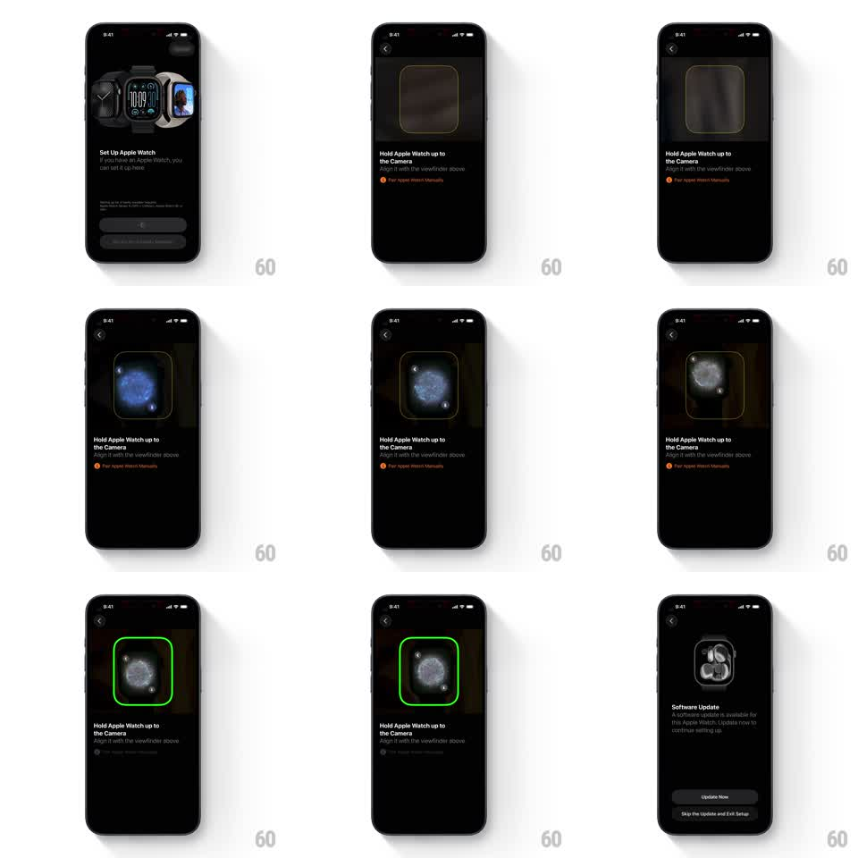

Media
Frame-by-frame

Rebuild this interaction 1:1: Apple's Watch pairing scan - the "Set Up Apple Watch" screen opens a camera viewfinder, the watch's swirling particle face drifts into frame, and the viewfinder border snaps green on successful scan.

Rebuild this interaction 1:1: Apple's Watch pairing scan - the "Set Up Apple Watch" screen opens a camera viewfinder, the watch's swirling particle face drifts into frame, and the viewfinder border snaps green on successful scan. ## Integration Integration: stack-agnostic spec - springs given as stiffness/damping, timed motions as duration + curve; map every value to your framework and animation library of choice. ## Scene Black flow: intro screen with watch lineup and "Set Up for Myself" / "Set Up for a Family Member" buttons; then the scan screen - live camera view dimmed, a rounded-square viewfinder outline, "Hold Apple Watch up to the Camera / Align it with the viewfinder above", and a red "Pair Apple Watch Manually" link. In the viewfinder: the watch's blue swirling particle globe. Success: the outline turns bright green. ## Motion spec Pattern: scan-and-confirm sequence, ~2.5s. - Open: the scan screen slides up over the intro (350ms, ease-out); the viewfinder outline pulses faintly (opacity 0.6 -> 1, 1.2s loop). - Acquire: the watch face wanders into the viewfinder (user-driven), its particle globe swirling continuously. - Lock: on recognition the outline snaps to green (stroke color + slight scale 1 -> 1.03 -> 1, spring ~420/20) with a haptic; a soft green glow blooms (200ms). - Advance: after a 400ms hold, the update modal slides up from the bottom (350ms, ease-out) covering the scan screen. ## Calibration - The viewfinder stays fixed center-screen; the watch moves, not the frame. - Green is the only success signal - no checkmark overlay. ## Reduced motion Outline switches to green without pulse or bounce (150ms). ## Don't miss - The particle globe keeps swirling inside the viewfinder the whole time, even after lock. - "Pair Apple Watch Manually" stays visible until the modal covers it.